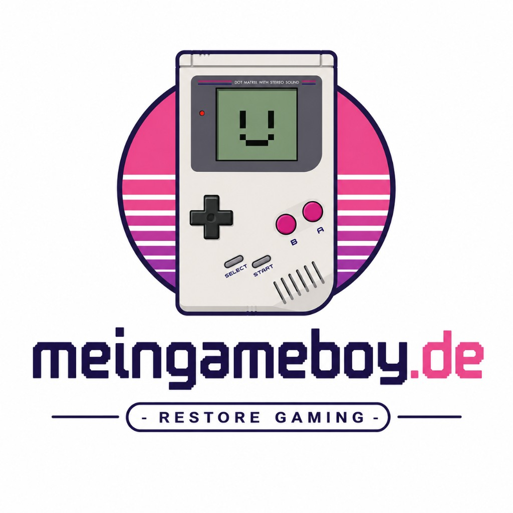

Von der Dot-Matrix bis zum Advance – die Handheld-Linie im Überblick
Retro-Wissen
Wann kam welche Konsole raus – und was war jeweils neu? Von 1989 bis 2005 in der chronologischen Übersicht.
Der Ur-Game Boy startete 1989 in Japan, ab 1990 auch in Europa – und machte tragbares Spielen zum Massenphänomen.
Deutlich kompakter und leichter – Nintendo reagierte auf den Wunsch nach einem schlankeren Handheld.
Kurz vor dem Game Boy Color erschien in Japan eine seltene Sonderedition – der erste Game Boy mit Beleuchtung.
Der große Sprung in die Farbe – und trotzdem abwärtskompatibel zu allen klassischen GB-Spielen.
Neue Generation: 32-Bit-Leistung, Querformat und ein deutlich größerer Bildschirm – GB und GBC liefen weiterhin mit.
Das Klapp-Design wurde zum Kult – und brachte endlich Licht ins Display plus Akku statt Wegwerf-Batterien.
Nintendos kleinster Handheld – winzig, edel, aber nur noch für GBA-Spiele gedacht. Der letzte reine Game Boy.
2004 startete mit dem Nintendo DS eine neue Ära (zwei Bildschirme, Touch, stärkere Hardware). Die klassische Game-Boy-Linie endete offiziell mit dem Micro – doch die Kultkonsolen von DMG bis GBA spielen bis heute eine große Rolle in der Retro-Szene.
Alle Modelle im Shop ansehen